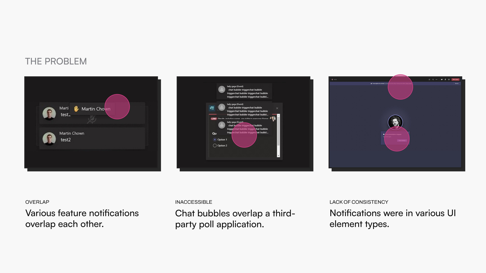
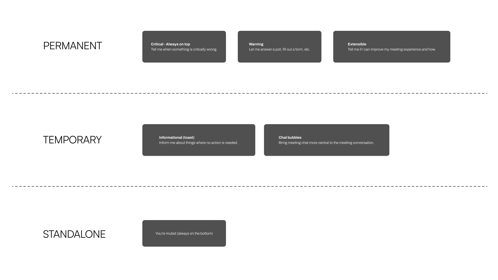
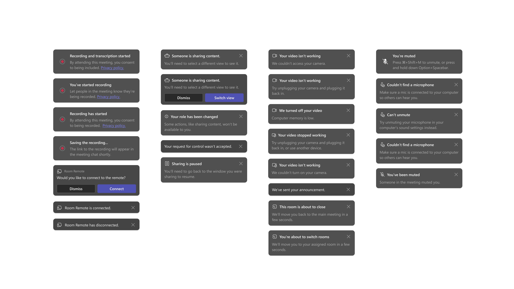

Role
Senior Designer leading UX audit, framework logic, visual design, and animation. Facilitated cross-team alignment through weekly design meetings and documentation.
Microsoft Teams
Auditing 200+ notifications, designing a scalable taxonomy, and clearing the path for leadership-priority features.
Role
Senior Designer
Scope
UX Audit + Framework Design
Impact
104 Notifications Cut
200+
Notifications Audited
104 Cut
Redundant Removed
100%
VIP Pilot Completion
Senior Designer leading UX audit, framework logic, visual design, and animation. Facilitated cross-team alignment through weekly design meetings and documentation.
Since its initial implementation in 2016, the in-meeting notifications framework had become a junk drawer.
With 200+ notifications across feature teams and no governance or documentation, teams chose whichever notification type they wanted. Notifications overlapped, blocked the meeting canvas, stacked banners that shifted the video grid, and failed accessibility standards. The Raise Hand and Chat Bubbles features — both leadership priorities — were blocked from shipping.

This wasn't just a visual design problem.
Every feature team had their own notification behaviors, and there was no shared logic or rules. Cutting notifications meant telling other product teams their work was getting removed, and there was no existing process for cross-team alignment on notification usage.

I chose to solve the system, not just the immediate blockers.
Rather than patching Raise Hand and Chat Bubbles into the existing mess, I audited all 200+ notifications and designed a framework from scratch. I created a three-tier taxonomy — Permanent, Temporary, and Standalone — that gave every notification type a clear home and set of rules.
I cut 104 notifications that were redundant or misclassified, navigating pushback by establishing a weekly open design meeting where affected teams could bring their needs and get guidance. I also created a handbook so the framework would outlast my involvement.
Permanent notifications handle critical alerts and actionable items that stay on screen. Temporary notifications cover informational toasts and chat bubbles that appear and dismiss. Standalone notifications occupy fixed positions for persistent indicators like mute status.
The taxonomy, documentation, and weekly governance meetings gave feature teams clarity on when and how to use each type.


Raise Hand and Chat Bubbles were unblocked and shipped within a quarter.
Through our VIP pilot program, 100% of 49 customers completed critical tasks and signed off for feature release, with NSAT scores of 8.8 for participants and 9.3 for admins.
Next Feature
Together Mode